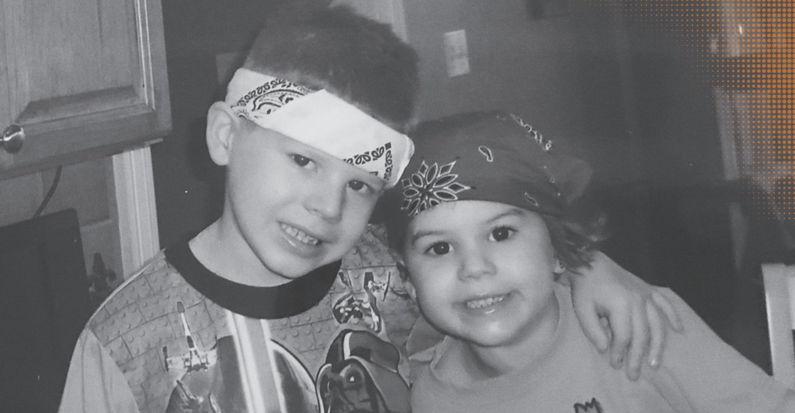
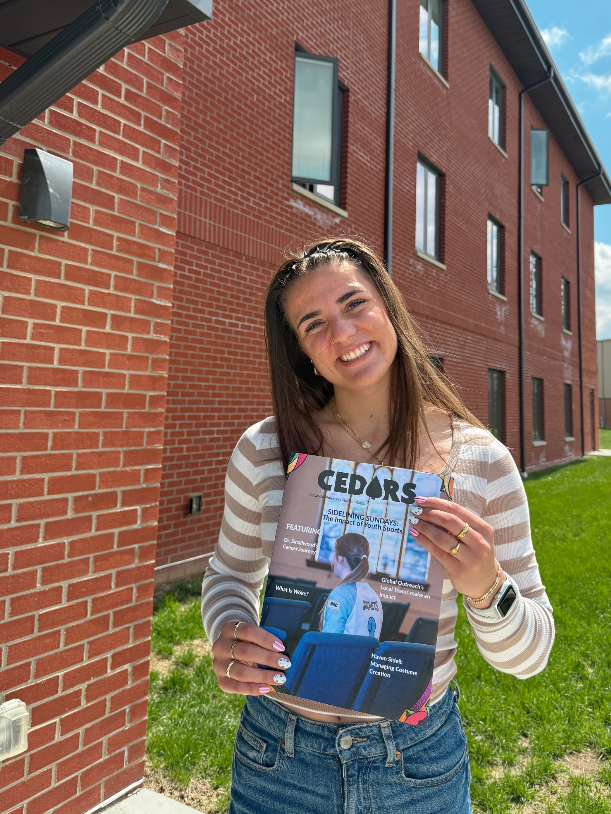
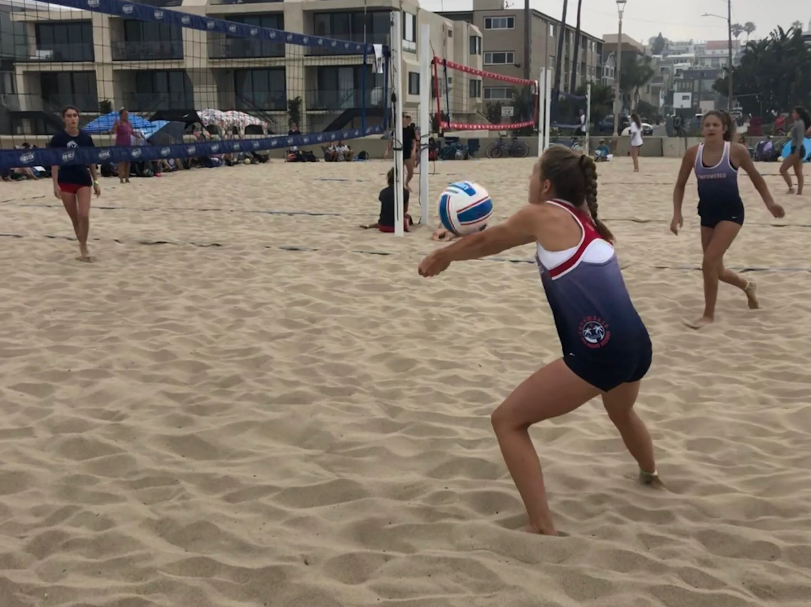

FEATURE / 2026
FEATURE / 02
FEATURE 02 / CEDARS MAGAZINE


THE FEATURE
The purpose of the story was to write about the impact of youth sports on church attendance, the difficult dichotomy of priorities, and the growing draw of youth sports involvement. I wrote this for Cedars' (my student newspaper) magazine edition, which we put out once a semester.
I learned how to use a little more opinion-based thinking, but also to find sources to back this information and to find an individual to interview who had a story that worked with the overall theme.
AWARD RECOGNITION
Sidelining Sundays won the Region 4 Mark of Excellence Awards from the Society of Professional Journalists.
MORE FROM CEDARS